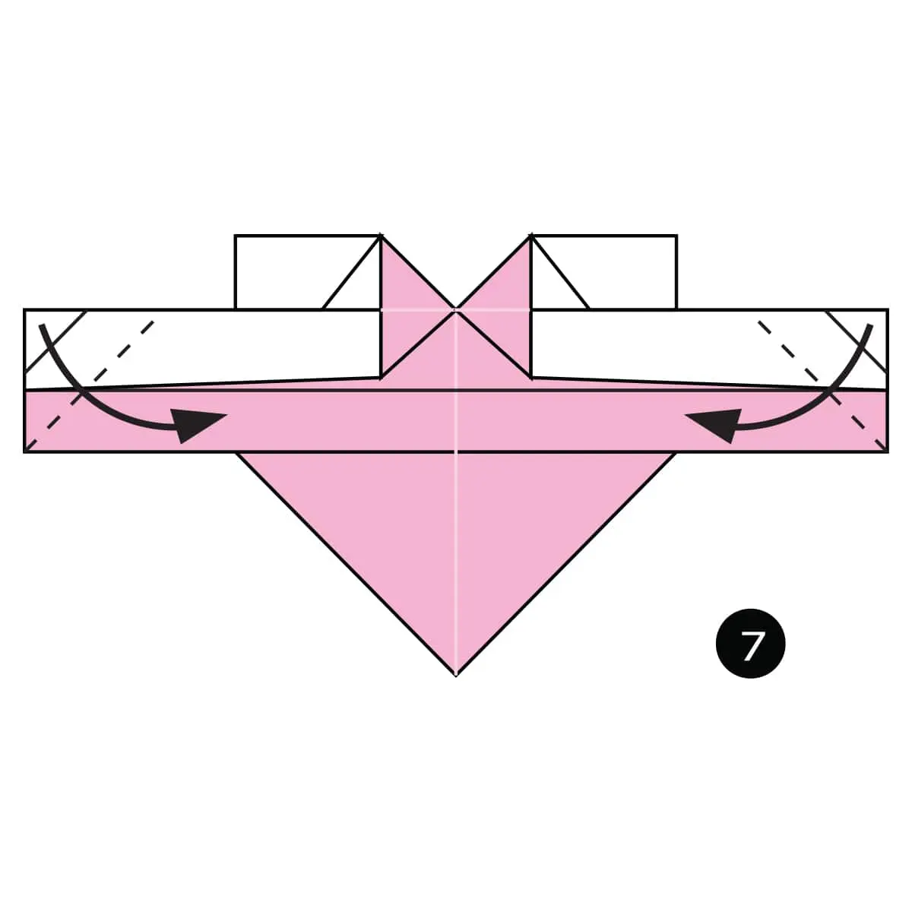

These instructions will show you how to make an easy origami Winged Heart.
Fold and unfold the paper in half both ways.
Fold the top and bottom in to the centre.
Turn the paper over.
Fold both sides up along the dotted lines.
Turn the paper over.
Fold the top down and make Squash Folds on the flaps that open up. See the zoomed in part in the circle. Also take a look at the next step to see the final position of the folds.
Fold both sides in along the dotted lines.
Turn the paper over.
Fold the tops in behind along the dotted lines to finish shaping the heart.
The complete heart with wings.